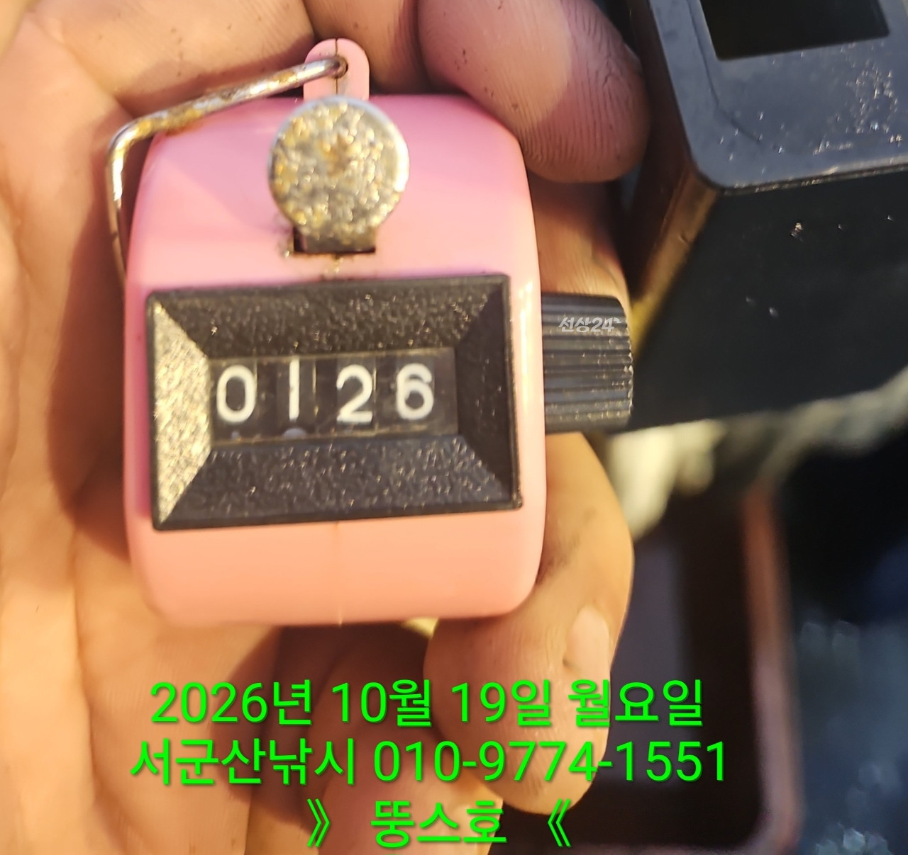
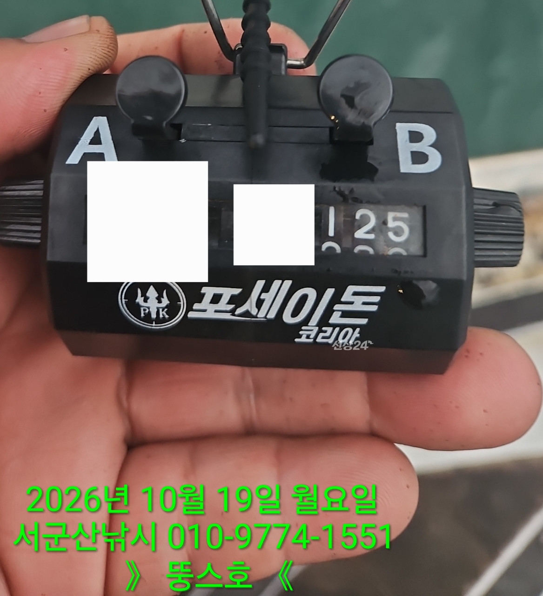
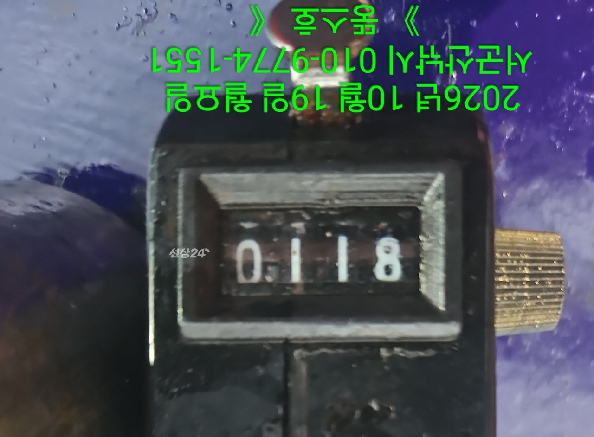
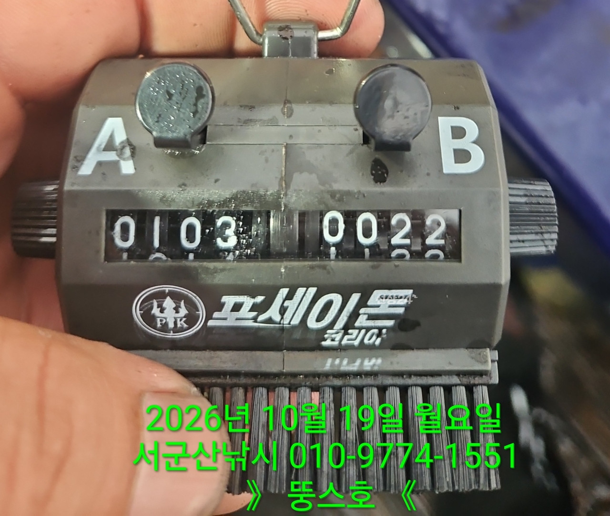
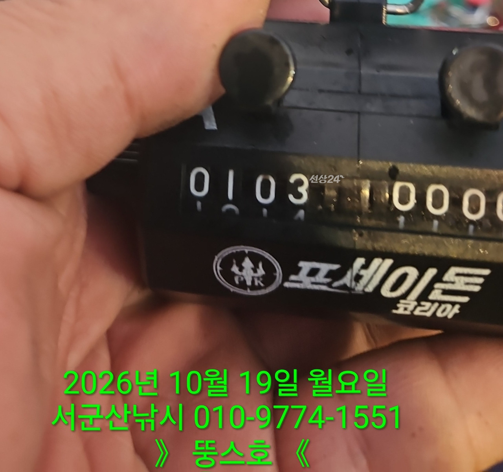
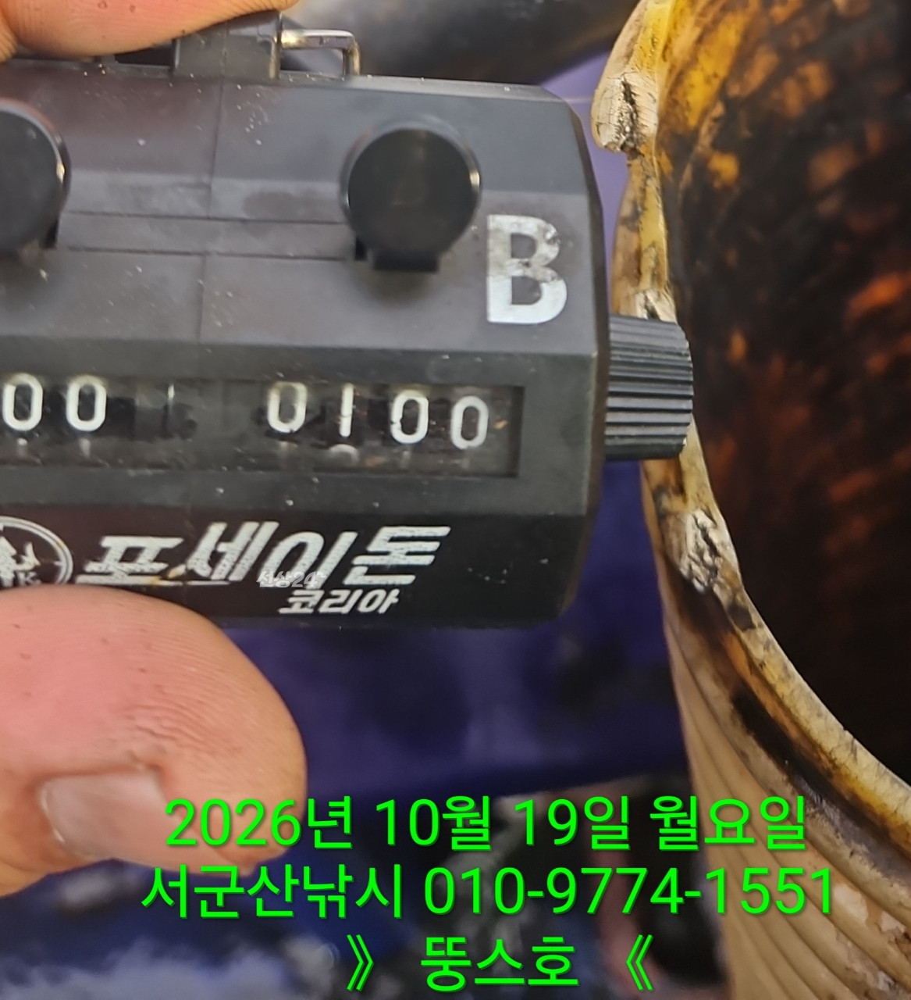
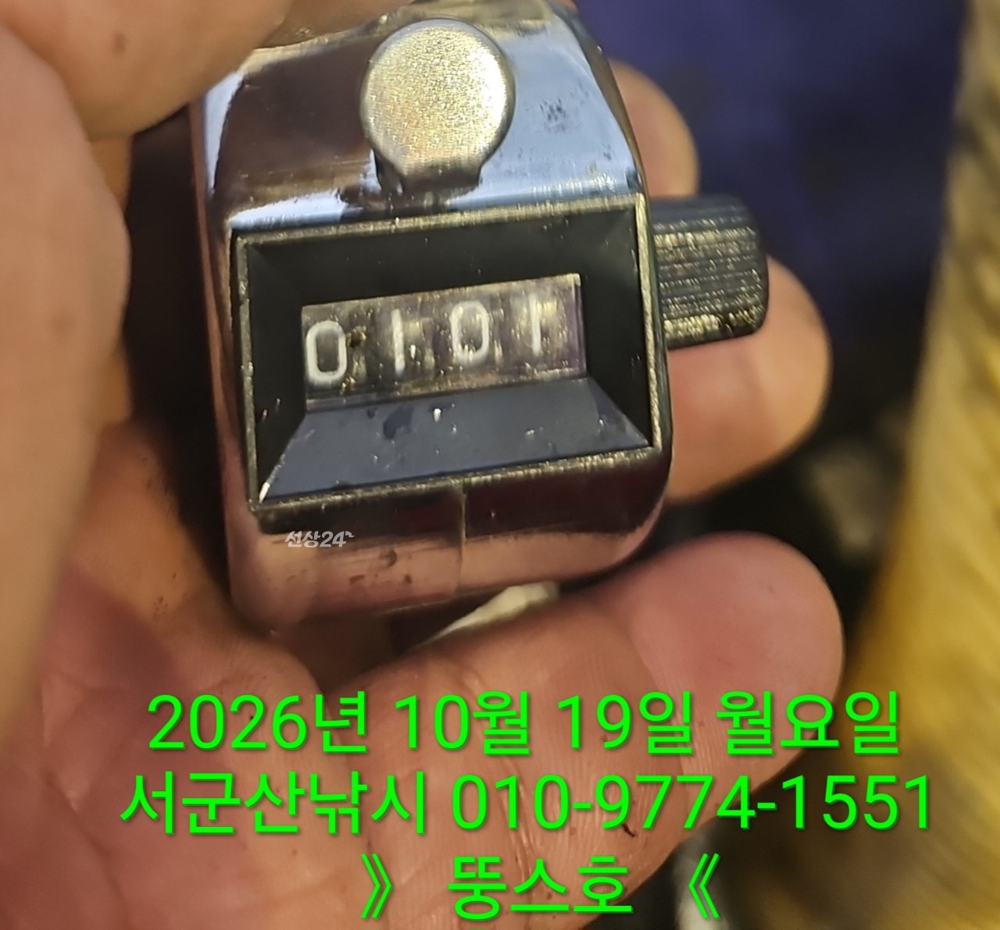
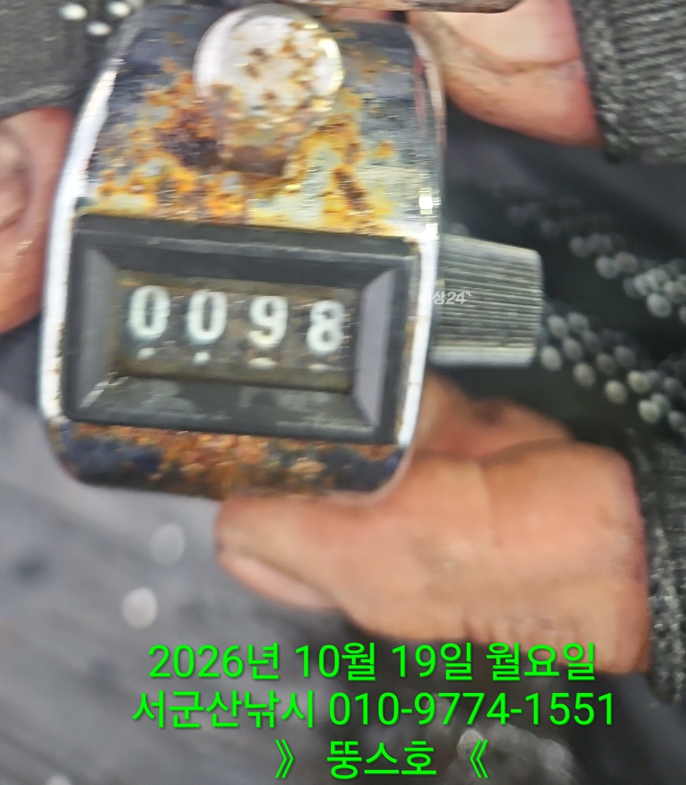
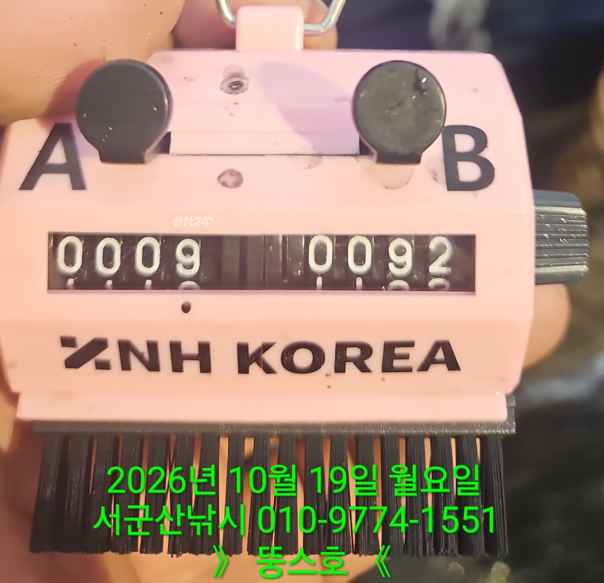
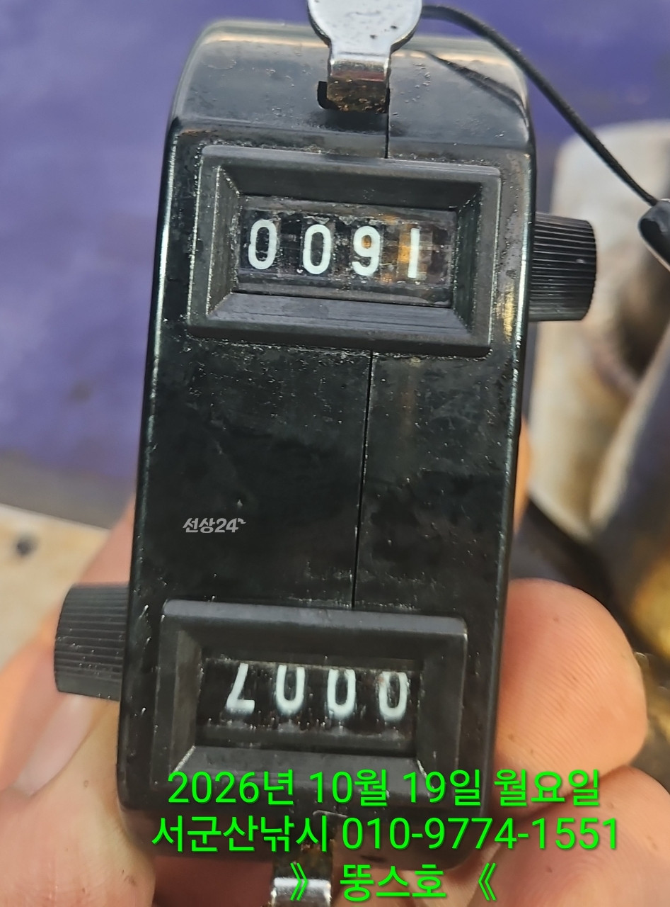

2026-10-20 · 군산 뚱스호
조황정보 HOME / 조황정보 / 조황상세
10/19 [군산 뚱스호]_쭈꾸미 종일반 조황 10/19 [군산 뚱스호]_쭈꾸미 종일반 조황 안녕하십니까..10월 19일 쭈꾸미종일반 조황입니다철수길에 밧줄걸려 늦게입항하게되어 조사님들께대단히 죄송합니다어제의 바람과 너울의 영향으로 걱정하며 출항 하였는데첫포인트에서 잡어를 비롯하여쭈도 나오기는하나 시원스레 나오지 않아그냥 널뛰기하러 포인트 이동하여여기저기 찍다가 잡어가 좀 나와주어열낚하는데 이건 잡어 피딩 수준이네요그래서 잡어 열낚하고 쭈는 망했습니다카운터기 숫자는 갑오징어 카운트 입니다쭈 카운트는 없습니다..;;;;;;오늘오신 조사님들 고생 많으셨습니다 ■ 예약문의 : 063-466-6565 010-9774-1551■ 오시는길 : 전라북도 군산시 새만금북로277(오식도동 1002)■ 서군산낚시 실시간 예약 바로가기 : http://seo.sunsang24.com/■ 서군산낚시 밴드 바로가기 : https://band.us/band/78646704 서군산낚시 (서해안/비응항) 1.7km 주꾸미 2026. 10. 20 | 조회 469 서군산낚시 (서해안/비응항) 2026. 10. 20 | 조회 469









